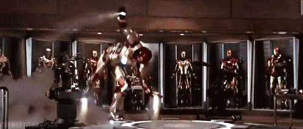
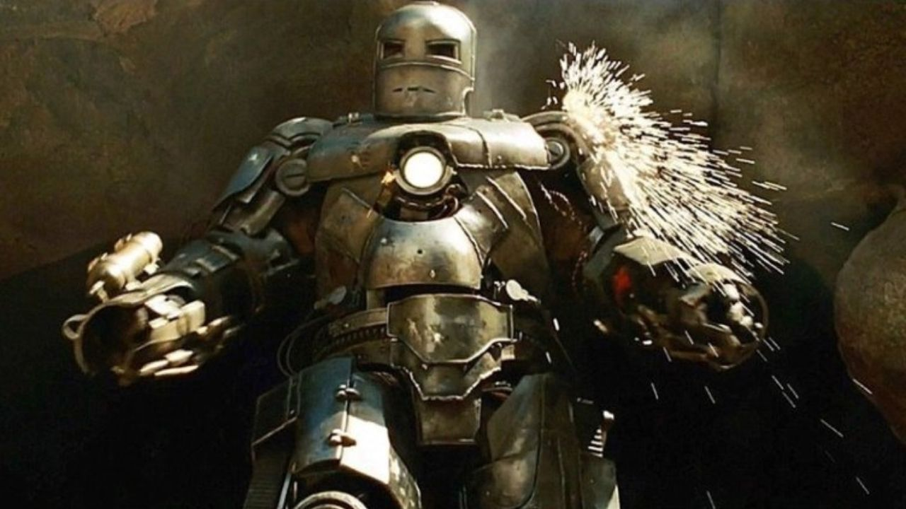
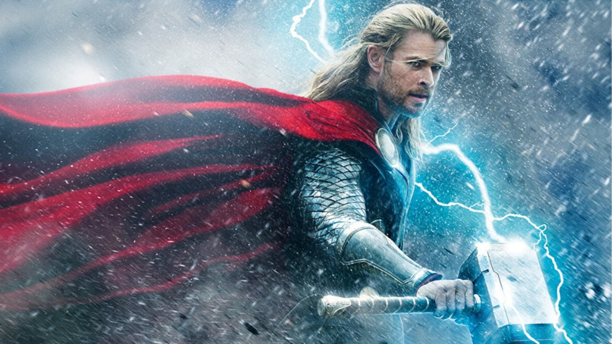
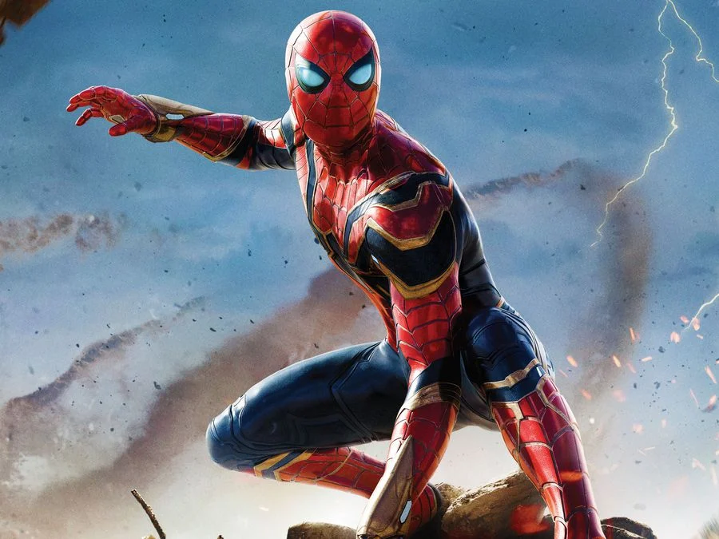
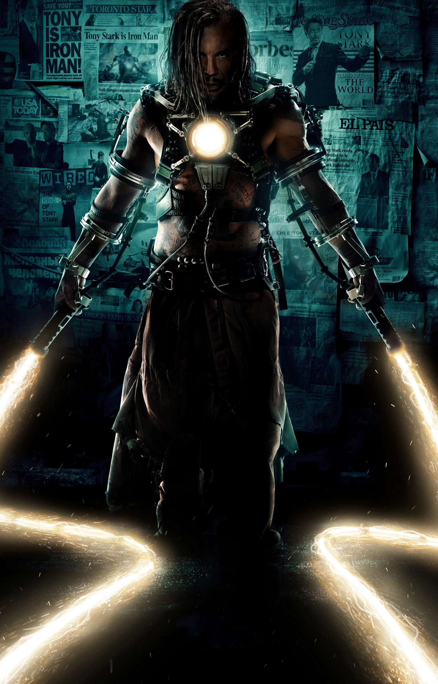
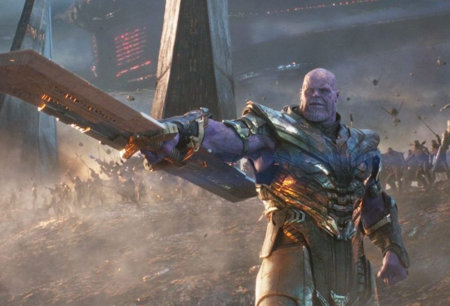

Homem de Ferro é visto vestindo o seu traje
Esse cara é muito bom!!!
Homem de ferro é visto lutando

Bixo é apelão de mais
Homem de ferro primeiro filme dele
Feio pra cacete
Um Pouco Do Homem de Ferro
O Homem de Ferro (Iron Man, no original em inglês) é um dos super-heróis mais emblemáticos da Marvel Comics. Ele foi criado por Stan Lee, Larry Lieber, Don Heck e Jack Kirby, com a primeira aparição sendo em Tales of Suspense #39, em 1963. O personagem é o alter ego de Tony Stark, um bilionário, inventor e filantropo.
Aliados
Capitão América

Ele é conhecido por sua luta contra o nazismo durante a Segunda Guerra Mundial, como um símbolo de patriotismo e justiça. Recentemente, o filme "Capitão América: Admirável Mundo Novo" foi relatado como o mais caro do Universo Cinematográfico da Marvel, com um orçamento de US$ 380 milhões.
Thor
Thor é uma figura proeminente tanto na mitologia nórdica, onde ele é um deus associado ao trovão e à fertilidade, conhecido por empunhar o martelo Mjolnir, quanto na cultura pop, em que aparece como um super-herói nas histórias em quadrinhos da Marvel Comics, onde suas aventuras são adaptadas e reinventadas.
Homem Aranha
O Homem-Aranha, alter ego de Peter Parker, é um super-herói das revistas em quadrinhos da Marvel Comics. Ele ganha superpoderes após ser picado por uma aranha geneticamente modificada e enfrenta diversos inimigos ao longo de suas aventuras.
Vilões
Doutor Destino

Victor von Doom, mais conhecido pelo alter ego Doutor Destino, é um personagem fictício e supervilão que aparece nas histórias em quadrinhos publicadas pela Marvel Comics. Foi criado por Stan Lee e Jack Kirby, tendo sua primeira aparição na HQ Fantastic Four #5
Chicote Negro
Chicote, ou Whiplash em inglês, é um vilão do universo Marvel, criado por Stan Lee e Gene Colan. Ele é conhecido por suas habilidades e armaduras que utilizam tecnologias semelhantes às do Homem de Ferro, proporcionando uma gama de aprimoramentos ao seu usuário.
Thanos
Thanos é um supervilão fictício das histórias em quadrinhos publicadas pela editora norte-americana Marvel Comics inspirado em Thanatos. Com primeira aparição na edição The Invincible Iron Man #55 e foi criado pelo escritor-artista Jim Starlin, com visual inspirado em Darkseid.